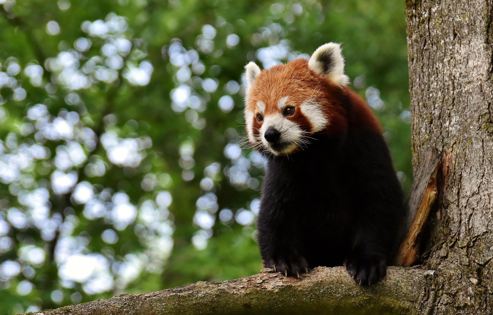
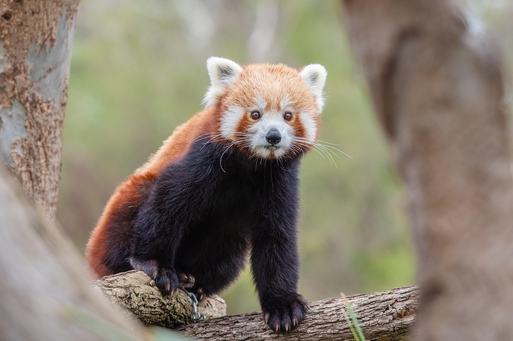

Lebensraum
Der Rote Panda lebt in feuchten Bergwäldern des Himalaya und in Teilen Chinas. Er braucht dichtes Bambus-Unterholz.
Wissenswertes
Lerne mehr über Lebensraum, Ernährung und Schutz eines der schönsten Waldbewohner Asiens.
Mehr erfahrenDer Rote Panda ist keine Unterart des Großen Pandas. Er gehört zu den eigenen Säugetieren und lebt in den Bergwäldern des Himalaya.
Sein Fell ist rotbraun, der Schwanz dicht gestreift und er verbringt die meiste Zeit im Bambuswald.
Der Rote Panda lebt in feuchten Bergwäldern des Himalaya und in Teilen Chinas. Er braucht dichtes Bambus-Unterholz.

Bis zu 99 % seiner Nahrung besteht aus Bambus. Daneben frisst er Früchte, Pilze und kleine Insekten.

Der Rote Panda ist gefährdet. Lebensraumverlust und Wilderei sind die größten Gefahren für die Art.
Im Steckbrief findest du weitere Details zu Verhalten, Fortpflanzung und Schutzmaßnahmen.
Zum Steckbrief